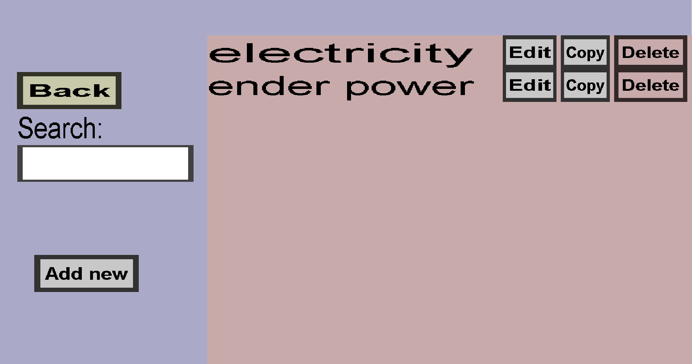

The energy type overview can be used to view and edit your energy types. An energy type is a type of energy or resource that can be used in container recipes. Some container recipes may drain from a certain energy type while other container recipes may add more energy of that type. This menu should look like this:
More information about energy types is shown here.